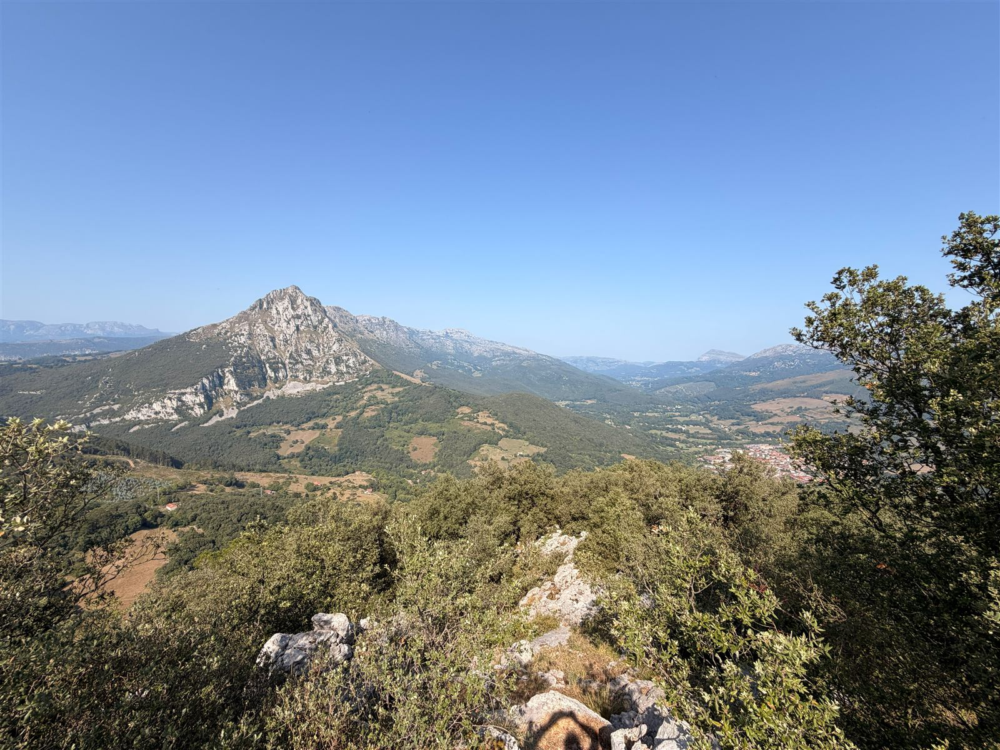

Ramales Natural · Invasoras
¿Has visto una
planta invasora?
Ayúdanos a localizarla y a conocer su presencia en nuestro entorno.
No necesitas saber identificar la especie.
Juntos por un entorno más natural
La ciencia ciudadana también protege la biodiversidad.
Ramales Natural
Sobre el proyecto
Reporte Invasoras es una iniciativa de Ramales Natural para localizar y conocer la presencia de especies de flora invasora en Ramales de la Victoria.

La colaboración ciudadana importa
Cada persona que camina por nuestros montes, ríos y caminos puede ayudar a detectar antes la presencia de especies invasoras. Cuantos más ojos observan el entorno, antes se puede actuar para proteger la biodiversidad local.
Pequeños gestos,
grandes cambios.
Ramales Natural
Especies invasoras
Conoce las especies de flora incluidas en el Catálogo Español de Especies Exóticas Invasoras y aprende a reconocerlas.
Especies que puedes encontrar en nuestro entorno
Catálogo completo
Fuente oficial: Catálogo Español de Especies Exóticas Invasoras (CEEEI) · MITECO
No hemos encontrado ninguna especie con ese nombre.
Ramales Natural
Cómo hacer un buen reporte
Con estos cinco pasos nos ayudas a identificar y localizar mejor cada planta.
- 01
Fotografía la planta completa.
- 02
Si puedes, fotografía también hojas, flores o frutos.
- 03
Indica dónde la has encontrado.
- 04
Cuéntanos aproximadamente cuántas plantas hay.
- 05
Envía el reporte.
¿Qué planta has visto?
Elige la que más se parezca. Si no la reconoces, no pasa nada.
¿No sabes qué planta es? Tranquilo. Haz una fotografía y nosotros podremos revisarla.
Haz una foto
Puedes añadir hasta 3 fotografías. La foto es opcional, pero nos ayuda mucho a identificar la planta.
¿Dónde la has visto?
Intentaremos detectar tu ubicación automáticamente. También puedes marcarla tú a mano en el mapa.
¿Cuánto hay?
Una estimación aproximada es suficiente.
¿Quieres añadir algo más?
Es opcional. Por ejemplo: "está junto a un camino" o "hay muchas plantas cerca".
¿Quieres que podamos contactarte?
Estos datos no son necesarios para enviar el reporte. Puedes dejarlos en blanco.
Revisa tu reporte
Comprueba que todo esté bien antes de enviarlo. Puedes editar cualquier apartado.
Especie
Fotografías
Ubicación
Cantidad
Observaciones
Contacto
¡Gracias!
Tu observación ha sido enviada correctamente.
Cada reporte nos ayuda a conocer mejor y proteger nuestro entorno.